Aansluiting Nesselandelijn deel 2, eerste rit gemaakt...
- maandag 08 december 2008 09:12
- Geschreven door Joachim
Dit keer deel twee van de aansluiting van de nieuwe Nesselandelijn. Van gistermiddag tot vanmorgen werd getest, getest en nog eens getest, maar... vanmorgen maakte voor de eerste keer een combinatie metrostellen een rit op het nieuwe tracé naar Nesselande. Dit gebeurde met de rijtuigen 5248, 5238, 5266 en 5268 (als wagendienst 599). De allereerste rit verliep niet geheel vlekkeloos, doordat sommige voedingskabels voor de stroomvoorziening niet juist aangesloten waren. Hierdoor stond een deel van de metrotrein (bestaande uit de vier eerder genoemde rijtuigen) spanningsloos. Echter, het eindstation werd wel bereikt. Een heugelijk feit. De eerste metroritten naar Nesselande werden vandaag gemaakt, en: retmetro.nl was erbij!
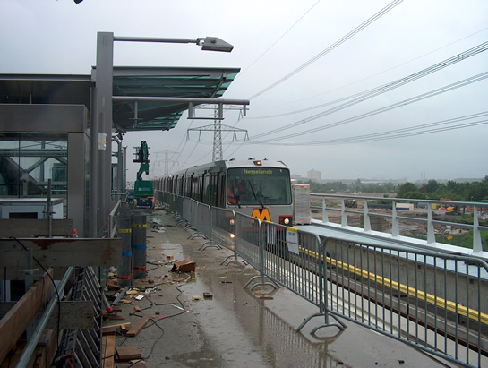
Metrorijtuig 5248 op kop, gefilmd "Nesselande". De foto toont de eerste rit op het nieuwe tracé, vanmorgen omstreeks 10.00 uur. Station Nesselande, spoor 1.
Na de rit, die omstreeks 10.20 uur weer eindigde op station De Tochten, werd wisselcomplex De Tochten opnieuw in dienst gesteld. Dit verliep, ondanks een meldstoring, redelijk. Omstreeks 15.00 uur vanmiddag, werd de tweede testrit georganiseerd op de nieuwe Nesselandelijn. Hierbij gingen twee tweewagentreinen (5248/5238, wagendienst 599 en 5266/5268 als wagendienst 598) apart het tracé op. Dit om de ATB-signalering te testen. Wat betreft stroomvoorziening traden er geen problemen meer op.
Er werd gependeld met soms een vierwagentrein en dan weer twee tweewagentreinen tussen de kruising Rietdekkerweg (nabij Ambachtsland) en station Nesselande. De testritten vonden plaats op zowel spoor 1 als spoor 2. Het omschakelen van metrobedrijf naar sneltrambedrijf en andersom verloopt ook zonder problemen. Hieronder enkele foto's:
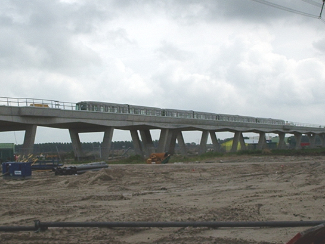
De vierwagentrein op weg richting station Nesselande. De foto laat de tweede testrit zien, vanmiddag omstreeks 15.00 uur.
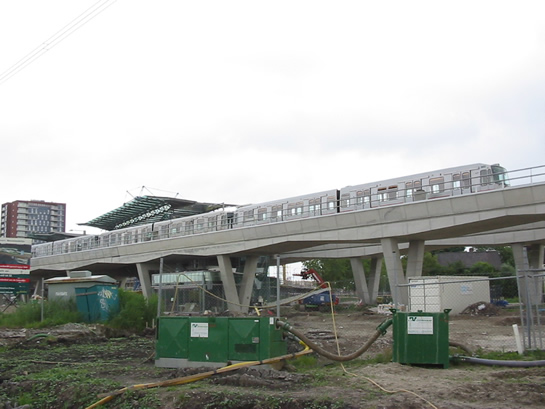
De vierwagentrein in station Nesselande, op spoor 1.
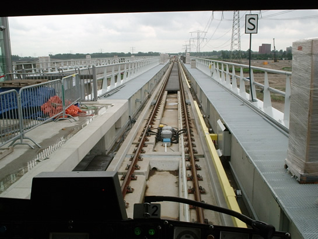
Foto's van het tracé vanuit de cabine. Station Nesselande, spoor 1.
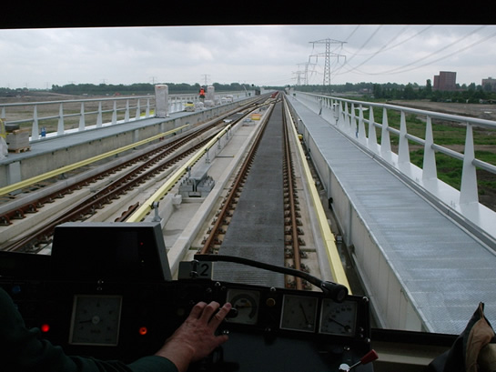
Wisselcomplex Nesselande, kijkend richting Zevenkamp.
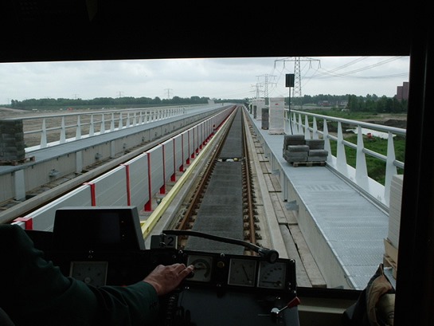
Iets verderop. Aan de rechterzijde het tweede S-bord van het wisselcomplex.
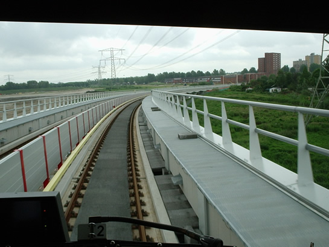
Om de boog met een hogere snelheid te kunnen berijden, is er een sterke verkanting in het spoor aangebracht.
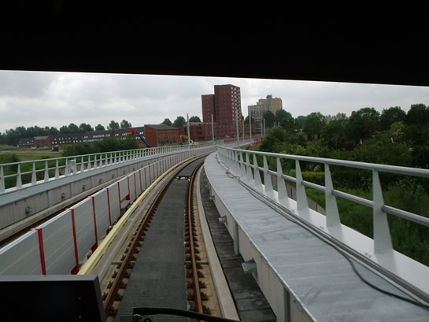
Bijna terug op het sneltramtracé. Over enkele honderden meters moeten de pantografen weer omhoog gedaan worden, om stroom af te kunnen nemen van de bovenleiding. De stroomafname van de derde rail wordt dan automatisch gestopt.
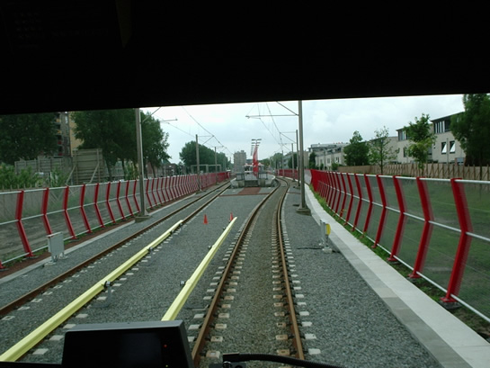
Waar vroeger de uitloopsporen lagen, ligt nu een échte metrobaan.
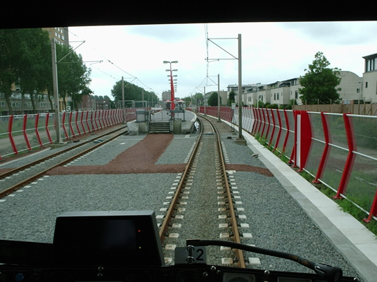
Ook vanuit de cabine goed te zien: het nood-overpad dat leidt tot de nooddeur (rechts).
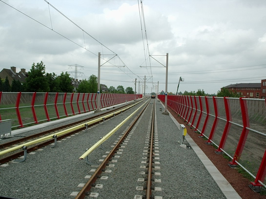
Om afbouwende signalering te testen, werd dicht op de voorganger gereden. In het gebied op de foto moet worden omgeschakeld van sneltram- naar metrobedrijf. In de verte rijtuigen 5248 en 5238.
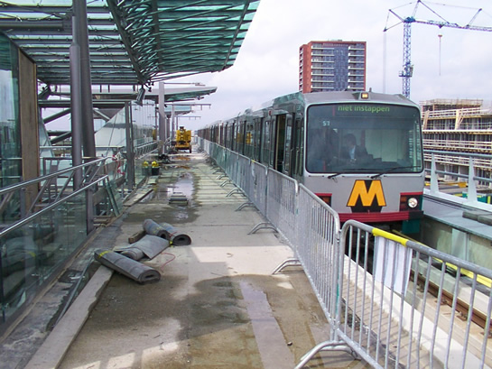
En station Nesselande, gereed voor de terugrit staat de 5268 en testploeg te wachten op een rijweg richting De Tochten.
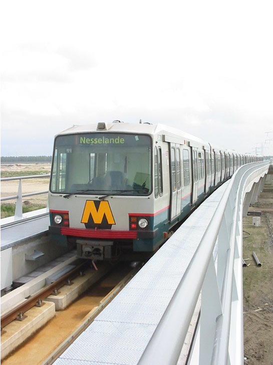
Rijtuig 5248 als achterste wagen in de vierwagentrein, op weg naar De Tochten.
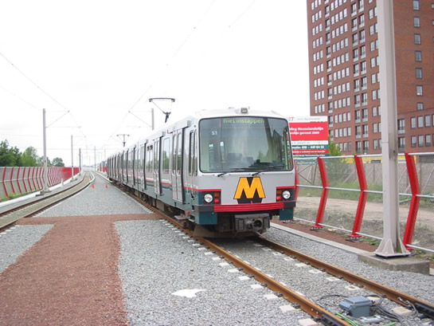
Rijtuig 5238, richting Nesselande tijdens een nieuwe testrit.
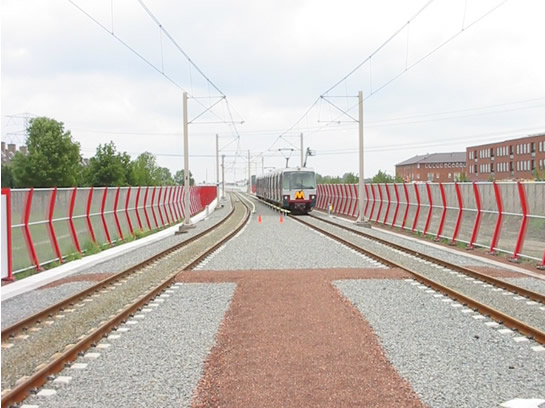
De pantografen worden naar beneden gelaten en vergrendeld en de stroomafname van de stroomrail kan beginnen.
Morgenochtend om 5.00 uur wordt de dienst op het traject Nieuw Verlaat - De Tochten v.v. weer hervat. Ook gaat dan de spanning weer van de baan af, om verder te kunnen gaan met afrondende werkzaamheden. Vanaf 13 juni begint het testbedrijf, op 9 juli start het proefbedrijf tijdens exploitatie. Maar de eerste rit: dié is gemaakt!
Bij deze willen we alle betrokkenen bij de aanleg van de Nesselandelijn feliciteren met de niet-officiële succesvolle ingebruikname!